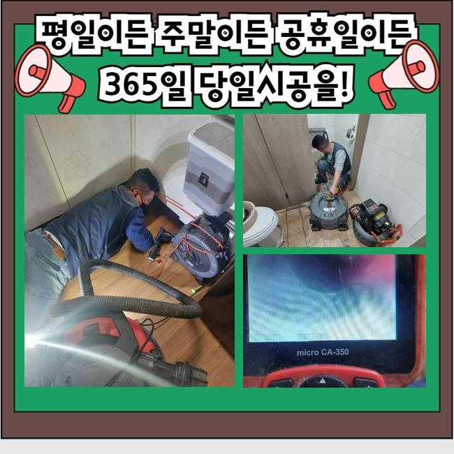
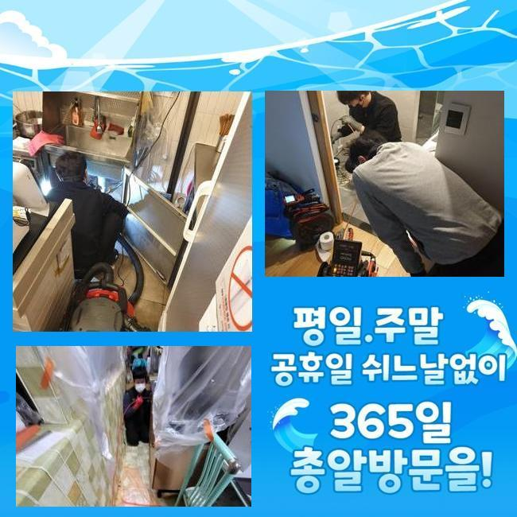
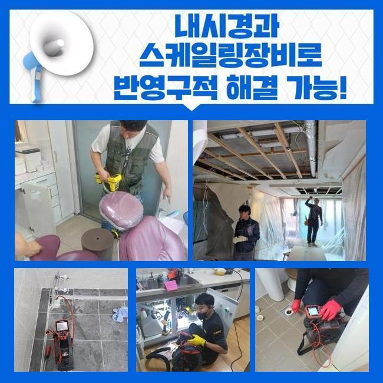
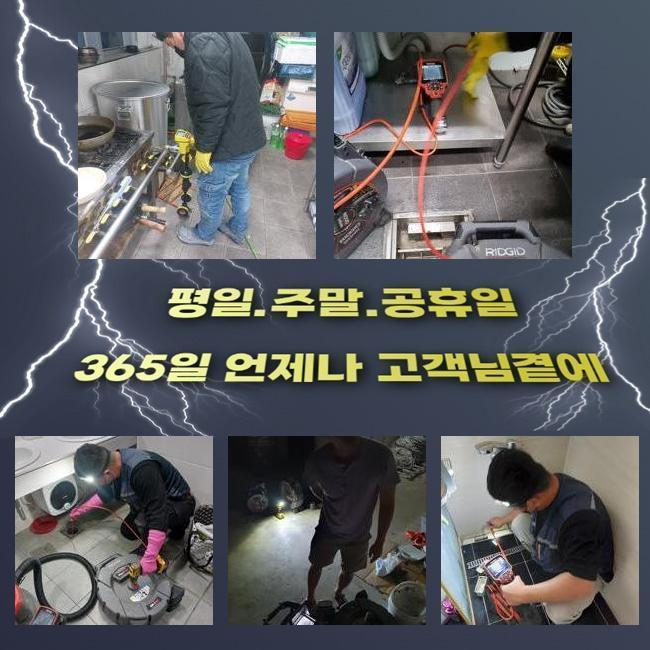
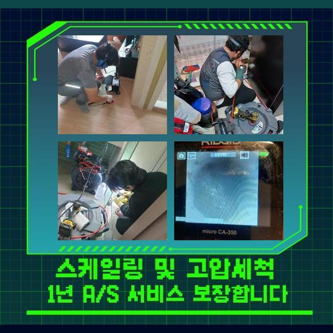
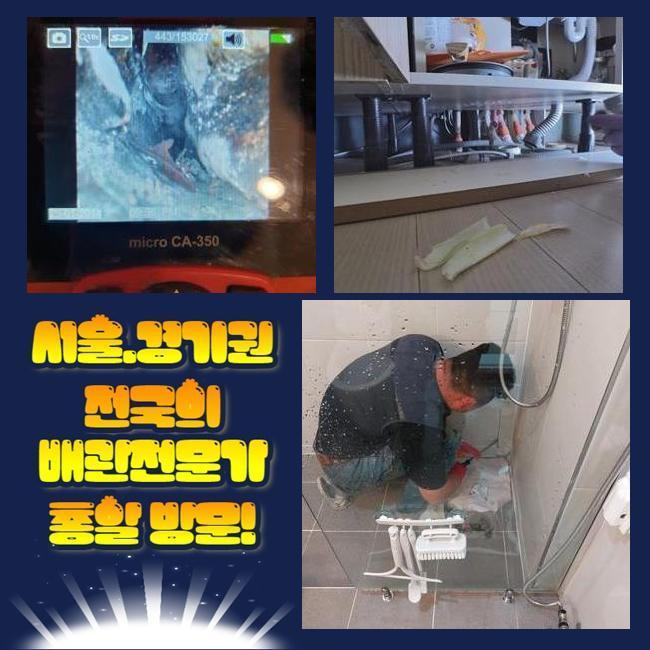
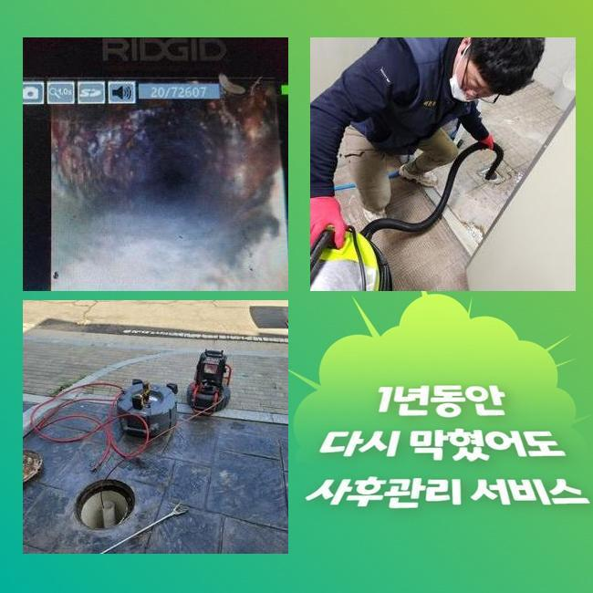

🏠 안산 와동세탁실막힘 백운동 배수구뚫기 누수
용인시 처인구 배관막힘 전문 시공 후기

📋 작업 개요
- 위치: 용인시 처인구, 수원시 영통구, 화성시 동탄
- 서비스 유형: 배관막힘, 하수구청소, 누수수리, 고압세척, 내시경점검
- 작업 일시:
- 업체명: 하수구수사대 (010-5615-2118)
🔍 문제 상황
안산 와동세탁실막힘 백운동 배수구뚫기 누수
한 가정집에 계신 분이 하수 시스템의 고장을 얼른 낫게 해달라는 문의가 들어왔습니다
주택은 건축된 이후 한참이 지난 곳이었는데 욕실에서 역행 사건이 도래해서 황급히 저희에게 지원 요청을 하신 상황이었죠
사실 과거에도 이미 다양한 하수 업체에서 여기를 다루어본 적이 있으나 성공적으로 고치는 것에 실패했던 장소라 더욱 신경썼습니다
원만한 해결을 위하여 욕실 안의 이곳저곳을 둘러보고는 안으로 장비를 삽입하여 내면까지도 확인을 해주었습니다
배관통의 전체를 확인하면서 속에 자리한 오류들을 모두 꼬집어내어 확실하게 데이터를 인식하게 되었어요
바닥 근방의 파이프와 굵직한 더 큰 배관이 수렴하는 영역에서 문제점을 체크했으며 적합한 노선까지도 탄탄하게 구상하게 되었습니다
문제부위를 모두 잡아주지 않으면 퀄리티도 제대로 나오지 않고 오물의 일부가 남아있어서 하수구의 추가적인 고장이 쉽게 건물에 생성될 수 있습니다
장소들을 전체적으로 잡아내어 전적으로 맑은 환경을 만드는 깔끔한 하수구 정화를 늘 이어가고 있어요
세척 과정을 이끌어가면서 앞을 가로막던 오물들이 소멸되는 모습이었지만 오랫동안 머무르면서 이미 고착화가 진행되어버린 이물이 물길에 제대로 쌓인 꼴이 골치 아프더라고요
샤프트 기기를 동원해서 단단한 걸 깨나가고 부숴진 조각을 다 수습해서 원래대로 통로를 확보했어요

🔎 원인 분석
💡 전문가 진단: 정밀 진단 장비를 사용하여 슬러지의 고착 여부를 판명하고 타격/세척 작업을 실시했습니다.
앞서 청소를 거쳐간 자취가 있기는 했으나 아직 고여있는 미처리분으로 인해 하수가 막혀버린 겁니다
일부 구간만 청소해도 물의 흐름은 잠시간 가능하게 변화할 수 있지만 금세 경로 방해가 생겨날테죠
안을 제대로 치워주고 어떤 수단을 통해 처리하는 중인지 대화도 나누면서 안심시켜드렸습니다
만일 삭제되지 못한 물질이 소규모에 불과해도 결합을 하게 된다면 부피감이 급격히 커져서 물길을 완전 봉인합니다
플렉스샤프트를 돌려 대형 오물을 컷팅해서 날리는 조각은 진공 석션으로 수습하여 쾌적한 내부로 되돌려놓았습니다
조심성없이 배관으로 잔여물을 방출하면 작동이 방해되는 막힘 사건이 탄생할 수 있으니까요
이전에 담당한 업체에서는 제대로 관리하지 못했던 것인지 시작 단계에서 가볍게만 처리만 겨우 해줬을 뿐인데도 막힌 쪽이 스무스하게 뚫리는 변화를 얻게 되었어요
또한 하수구 안에서부터 악취까지 유발되었으니 이 부분도 추스러드려야했어요
적절한 트랩을 위에 부착해서 밑에서 올라오는 모든 것을 차단했고 앞으로도 자주 갈아주는 정도의 공은 들여야 한다는 사실을 다시 강조했습니다
수칙만 지키면 불편함을 더는 마주치지 않을 것이라는 사실만 아셔도 실사용자분들이 규칙을 철저히 준수하실 것입니다
집안에서의 처리를 끝마치고 작업이 생각보다 빠르게 마침표를 찍게 되어서 추가진단을 해드린다고 하고 맨홀 가까이로 가서 맨홀 내측도 조사에 착수했어요

🔧 작업 과정
같은 관찰 내시경을 진입시킨 후에 내측을 집중 관찰해보았고 입이 떡 벌어질만한 대규모의 침전물이 전반적으로 분포해있는 사실을 눈으로 목격했습니다
완쾌를 위해선 치워야하니 사태를 극복하기 위한 내부 환경 정화작업을 책임지고 맡아드리기로 결정했어요
내시경 장비를 선진입 시키는 것은 막혀있는 실질적인 위치와 이물질의 밀집도를 잘 알아내기 위한 중요한 도구 중 하나 입니다
특히 옥외의 커다란 하수시설은 사람의 시력만으로 보기에는 극히 일부만 가능하므로 선명한 뷰를 제공하는 내시경이 적절히 들어가야 해요
어둑한 집수정 바닥까지 보려고 속까지 관로 카메라를 넣었고 굉장한 양의 슬러지들이 그 위용을 드러내더군요
석션을 가볍게 돌리니까 쉽게 끌어올리게 되었고 과다하게 배출되진 않았어요
갑작스럽게 물길이 뚫리면서 순식간에 물살이 집으로 향해서 다시 욕실 부근으로 경로를 바꾸게 되었습니다
이 부분도 석션의 이용으로 넘친 하수를 수거했고 야외의 배관이 괜찮아졌는지 마지막으로 한 번 더 더블체크를 해줘야 하겠다는 생각이 스쳤습니다
청소작업을 마친 이후에 촉발될 수도 있는 위해요소를 없애려고 빈틈없이 검토에 들어갔는데 상당히 다년간 유지되던 배관인지라 자체적인 데미지가 나타나지는 않았나 체크했어요
한순간에 여러 사태가 터진 때에도 침착한 자세로 효율적으로 상대하며 흠잡을 데 없는 공사를 끝낼 수 있었습니다
석회질로 단단히 굳어버린 물질이 여러 겹 쌓여버렸다면 전문적 샤프트 기계를 접목해서 석회 잔여물을 강하게 파쇄하고 부유하는 조각은 흡수시켜서 투명한 파이프라인을 구축했습니다!
사이사이 내시경을 계속해서 들여다 보면서 미미한 조각들이나 침전물도 세세하게 제거를 해주니 느슨하게 하는 배관정리와는 다른 수준의 성과를 거둘 수 있습니다
공들여 작업을 해주어서 하수구가 속히 복구되어 작동이 가능해졌고 위생적인 관로 분위기를 지켜나갈 수 있게 됐어요
물이 끊김없이 흐르고 있나 수도시설을 활성화시켜본 이후 건물 안에 장착된 배관망을 포괄적으로 살펴보면서 나아졌는 지를 살펴봅니다
작업을 끝마친 후에 하수구가 시각적으로도 단정하고 기능적 효율도 우수하게 보인다면 기구를 수거하고 정리를 합니다
장소를 얼른 벗어나지 않고 수리된 건물 배수망의 영속적 관리를 위하여 고객분께 내부를 점검하는 방법도 상세히 소개해 드렸어요
이는 추후 다시 나타날지 모르는 애로사항을 앞서 발견하여 즉각 응급 처리가 가능하게 해주려는 의도입니다
이러한 장비 이상이 발생하면 전문케어를 신청하여 빠르게 대응하는 것이 필요합니다


✅ 작업 완료
자가수리로 버텨오셨다면 제대로 수리되지 못해서 문제가 생길 수 있으니 확실하게 전문가에게 맡겨보세요
고객님이 괜찮으신 시간에 어느 시간대든 원하시는 날에 고객님 댁으로 향하여 솔루션을 제공해 드리니 걱정마세요
물 공급이 뚝 끊겨버린 상황이라면 더더욱 신속대응이 필수적이며 고객님이 요청하신다면 맞춤 설계로 시공하고 있어요
건물의 한 공간을 넘어서 아파트 전체에 유해한 환경을 유발할지도 모르므로 재빠르고 확실하게 대응 하는 것이 현명한 일입니다
언제든지 책임감과 끈기를 가지고 연락만 주시면 곧장 찾아가겠습니다




⚠️ 하수구 배관 막힘 예방 및 관리 가이드
- ✅ 머리카락, 비닐, 물티슈 등 물에 분해되지 않는 이물질은 절대 흘려보내지 마세요.
- ✅ 기름기 많은 식기는 설거지 전 키친타올로 먼저 기름때를 닦아내세요.
- ✅ 주기적으로 배수구에 뜨거운 물을 가득 부어주어 유지방 고착을 방지하세요.
- ✅ 작업 후 1년 이내 재발 시 무상 A/S 보증 서비스를 제공합니다.
💡 핵심 정리
- 확실한 장비 작업(내시경 점검 및 샤프트 스케일링)으로 원인을 뿌리 뽑습니다.
- 작업 후 1년 이내에 동일한 부위 재발 시 100% 무상 A/S 서비스를 보장합니다.
- 서울 · 경기 · 인천 전 지역에 24시간 언제든 긴급 출동할 수 있도록 항시 대기 중입니다.
❓ 자주 묻는 질문 (FAQ)
🚨 용인시 처인구 배관막힘 문제로 고민이신가요?
정확한 원인 진단과 확실한 시공으로 재발 없는 해결을 약속드립니다.
24시간 긴급 출동 | 서울 · 경기 · 인천 전지역 | 1년 내 재발 시 무상 A/S